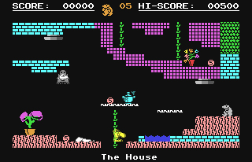
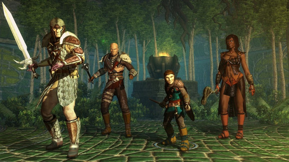
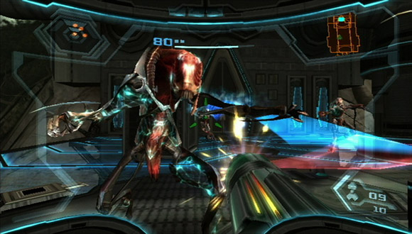
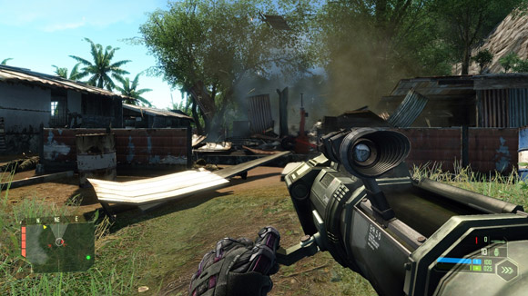

Vilain Game Designer ! Pas de biscuit pour toi ! X
L'article original est écrit par Ernest Adams publié par Gamasutra (décembre 2009).
L'auteur original n'est en aucun cas reponsable de la précision de cette traduction.

Nouvelle année, nouvelle liste d'erreurs de game design. J'ai reçu énormément de courrier et j'ai hâte d'en recevoir plus. J'ai tellement de travail en ce moment que je ne peux pas tester tous les jeux auxquels je voudrais jouer, c'est pourquoi, fidèles lecteurs, je compte chaque année sur vos contributions afin de trouver ceux qui sont mal conçus.
Commençons avec deux exemples tirés du jeu de rôle et envoyés par Kris Kelly. Pourquoi y a-t-il tant de TDC [NDT : Twinkie Denial Conditions, littéralement « condition pour refuser un biscuit », à savoir à un game designer qui a mal fait son travail] dans les jeux de rôles ? La complexité des mécaniques de jeu, sans doute.
Une IA extralucide.
Kris l'explique parfaitement clairement :
Dans Elder Scrolls IV: Oblivion, les gardes sont tellement forts qu'ils savent immédiatement quand vous avez commis un crime (tuer quelqu'un ou voler quelque chose dans un bâtiment par exemple), même s'ils ne se trouvaient pas dans le voisinage. Parfois, ils traversent la ville entière pour essayer de vous arrêter.
Un autre problème d'Oblivion concerne les objets volés : les marchands acceptent sans problème les objets que vous avez « récoltés » sur le cadavre de vos ennemis, mais si jamais vous leur amenez un chandelier, vous ne pourrez même pas leur offrir, ils refuseront quoi qu'il arrive.
Les problèmes de conception sous-jacents sont en fait différents ici. Les gardes extralucides ont un accès à une information globale alors qu'ils ne devraient avoir accès qu'à une information locale. Dans l'autre cas, les marchands ont un sens de la morale bien à eux : ils condamnent le cambriolage, mais pas le meurtre. Qu'est-ce que c'est que cette histoire ?
Des PNJ qui se téléportent.
Cet exemple est particulièrement pernicieux, parce qu'il contrevient à une attente raisonnable du joueur — un ennemi ne devrait pas pouvoir se trouver dans deux endroits à la fois — et ruine une stratégie intelligente.
Écoutons Kris à nouveau :
Je n'ai qu'un exemple de ce cas, mais je suis sûr que ceci se produit dans d'autres jeux. Dans Neverwinter Nights 2, il y a une grande bataille avec des géants de feu et un dragon rouge. Vous êtes censés combattre d'un côté ou de l'autre, mais, étant un vrai fourbe, j'ai décidé de commencer le combat du côté du dragon rouge, puis de m'éclipser pendant qu'il combattait les géants afin de piller son repaire.
Je me rends jusqu'à sa demeure, je ramasse le butin à portée de main et me retrouve soudain face à face avec un dragon complètement soigné et sans aucun géant à ses trousses, visiblement décidé à me pourrir. Je l'attaque un peu (et il me le rend bien), puis je décide de retourner côté géants (parce que c'était plus facile) et le voilà encore, en train de combattre les géants et à nouveau en pleine forme.

Soyons clairs : un dragon est soit en train de protéger son antre, soit en train de combattre des géants ailleurs. Pas les deux en même temps. Il est clair que les concepteurs ont implémenté deux dragons et ont cherché à faire croire au joueur qu'il s'agissait du même. Ce n'est pas très juste et ce n'est pas très amusant.
Des niveaux qui abusent d'une fonctionnalité ou la sous-exploitent.
Pascal Luban, un game designer freelance français que je connais depuis des années, m'écrit :
Une bonne mécanique ne fait pas un bon jeu, c'est la façon dont elle est implémentée qui le fait. La meilleure mécanique du monde n'est pas suffisante pour porter un jeu à elle seule, parce qu'elle devient forcément ennuyeuse si on la répète trop de fois dans les mêmes circonstances. C'est quelque chose que j'observe régulièrement dans les jeux.
Dans ces jeux, le level design ne crée pas des situations uniques adaptées à l'utilisation de cette unique mécanique de jeu. C'est pour ça que le level design est si important : parce qu'il permet au concepteur de créer de la diversité et un défi grâce à une mécanique donnée.
Pascal était réticent à donner des noms, mais il fait mention d'un célèbre shooter dans lequel le joueur dispose d'un super-saut et d'une super-force, dont aucun niveau ne font une bonne utilisation.
J'ai souvent écrit que les game designers déterminaient de quelles sortes de « briques Légo »le jeu sera fait, mais que ce sont les level designers qui construisent le jeu avec ces briques. Si le level design ne fait pas bon usage d'une mécanique de jeu, alors celle-ci est gâchée. Si elle est utilisée trop souvent de la même façon, alors elle devient ennuyeuse.
Sonic the Hedgehog constitue un bon exemple de jeu avec un nombre de mécaniques limité [NDT : du moins, les anciens…]. Sonic dispose seulement de deux mouvements, le saut et la course en boule, et pourtant, les niveaux offrent assez de variété pour que le jeu reste intéressant.
Des documents de conception incomplets ou ambigüs.
Je réfléchis d'habitude aux TDC du point de vue du joueur, mais les erreurs de game design peuvent aussi rendre la vie impossible à l'équipe de développement. Si le game designer ne précise pas comment un élément du jeu est censé fonctionner, c'est au programmeur de le deviner, ce qui est une perte de temps. Pire, s'ils partent dans des directions différentes, le résultat risque d'être incohérent, voir désastreux. David Mullies parle d'un projet qu'il a dû reprendre en main :
L'ancien game designer avait pris le parti de ne décrire que l'idée principale des systèmes ou des interfaces utilisateur. Il n'avait pas décrit les possibilités alternatives ou les cas extrêmes, laissant au programmeur la tâche d'identifier ces situations et de les gérer.
J'ai fini par réécrire la majeure partie du document de game design en incluant du pseudo-code (merci à mon expérience de programmeur) qui précisait plus clairement la logique à suivre. Mais indépendamment de la logique, le game designer avait laissé beaucoup d'autres détails aux programmeurs, comme le texte exact à utiliser pour les fenêtres d'alerte et de confirmation.
De plus, quand les programmeurs restaient tard, le game designer ne restait pas pour répondre aux questions et s'assurer que le design qu'il avait proposé était correctement implémenté.
Le fait que Mullich ait dû reprendre le projet est déjà une preuve que les choses ne marchaient pas. Je sais que c'est une opinion impopulaire auprès de certains game designers, mais chaque équipe de game design devrait inclure au moins une personne ayant une expérience dans la programmation.
Peu importe la quantité de discours que nous produisons sur l'esthétique des jeux et le jeu vidéo en tant qu'art (et soyez assurés que personne n'aime plus ces discours que moi), un jeu vidéo reste un logiciel, et concevoir un logiciel nécessite une capacité à discuter clairement des systèmes algorithmiques.
Et aucune excuse ne saurait justifier le fait de négliger le texte censé apparaître dans les boîtes de dialogue. C'est de la pure paresse. C'est peut-être ennuyeux, mais ça fait partie du boulot. Vilain game designer ! Pas de biscuit pour toi !
Ces game designers qui ne tiennent pas compte des limitations techniques.
Puisque nous en sommes à ces game designers qui empoisonnent l'existence de leurs équipes de développements, parlons de ceux qui ne comprennent pas la notion de limitation technique.
Gregg Tavers nous écrit :
Je connais beaucoup de game designers qui, par exemple, veulent 25 ennemis à l'écran quand le moteur ne peut en afficher que 10 grand maximum. Ou ils veulent que le moteur ait une profondeur de champ infinie. Alors ils obligent les programmeurs à passer des mois sur la conception technique du moteur plutôt que sur un gameplay amusant.
Je crois que si vous considérez la plupart des meilleurs jeux, les game designers ont justement réussi à trouver une façon d'être créatifs au sein de restrictions techniques drastiques. Metroid Prime en est un parfait exemple. La série des Zelda aussi.

Ç'a été un gros problème quand Hollywood a essayé de mettre la main sur l'industrie du jeu vidéo au début des années 90 : une quantité de soi-disant « game designers » sont arrivés du monde du cinéma sans rien connaître au fonctionnement des ordinateurs et ont rendu folles leurs équipes de développement avec leurs exigences absurdes. Leur ignorance est une raison (parmi d'autres) de l'échec de cette mainmise et durant cette période, on a gaspillé une quantité phénoménale d'argent.
Il faut connaître le hardware pour lequel vous développez. C'est absolument nécessaire. Si vous n'avez pas de compétence technique sur le sujet, alors demandez à vos programmeurs et faîtes leur confiance, parce que vous engueulez avec eux n'y changera rien.
Se moquer du joueur.
J'avais déjà listé celui-ci dans ma Déclaration des Droits des Joueurs.ses [NDT : en anglais], but il fait doublon comme TDC. Je ne joue pas aux jeux en ligne avec des inconnus, parce que je n'apprécie ni leur grossièreté ni leur manque d'esprit sportif. Je n'apprécie pas non plus quand c'est un jeu solo qui se moque de moi, et je ne suis pas le seul. Owen nous écrit :
Arrêtez de vous moquer ! Si j'échoue ou si je suis mauvais dans un jeu, ce n'est pas la peine de venir remuer le couteau dans la plaie !
Je suis bien conscient qu'il peut y avoir quelque chose d'amusant à se chambrer. En tant que membre de longue date de l'équipe de développement des Madden, je sais très bien que la bonne de façon d'y jouer, c'est avec plein d'amis et en se chambrant largement. Le mot-clef, néanmoins, est amis. Un ami sait ne pas dépasser les bornes.
Quand le jeu se moque du joueur, il ne s'agit plus d'une joyeuse plaisanterie : c'est grossier, comme insulter un inconnu. C'est simplement le game designer qui se moque du joueur, et ce n'est pas juste, parce que le game designer a toutes les cartes en main et que le joueur ne peut pas répondre. Ne vous moquez pas des échecs du joueur : c'est puéril et pénible.
Des objets essentiels, mais inaccessibles.
Le même Owen Clark nous écrit :
Faîtes en sorte qu'on ne puisse pas rater d'objets essentiels ! Si un objet que je récupère dans les premiers niveaux d'un jeu est censé devenir vital par la suite, alors je ne devrais pas pouvoir le manquer. Pas de si, pas de mais, pas de « l'objet n'est pas strictement obligatoire mais c'est ultra-dur sans lui ». Il n'y a rien de plus pénible que devoir recommencer un jeu depuis le début après trois ou quatre niveaux parce que vous avez manqué quelque chose dans les premiers niveaux. Filez moi simplement ce foutu objet.
Si vous ne donnez pas au joueur un élément dont il a absolument besoin pour finir le jeu, alors le jeu devient impossible à finir et il s'agit là d'une erreur de game design. Si le joueur a la possibilité de laisser derrière lui un objet essentiel avant de passer dans une porte à sens unique, alors le jeu devient de même impossible à finir : c'est pourquoi beaucoup de jeux d'aventure permettent au joueur de ramasser des objets mais pas de les reposer.
Le (très) vieux jeu Monty on the Run demandait au joueur de choisir les objets avec lesquels il allait commencer le jeu. S'il avait pris les mauvais, le jeu se révélait impossible à finir, mais seulement bien plus tard, ce qui est une grave erreur de conception.
Il faut faire une distinction ici, car Clark demande à ce qu'on lui donne les objets qui ne sont pas à proprement parler obligatoires mais seulement extrêmement précieux : il prend comme exemple la lunette de sniper dans Crysis. Sans elle, le joueur subit un lourd handicap. Je ne sais pas si on peut vraiment parler de TDC pour cette lunette de sniper : je pense que le problème réside ici dans la gestion de la difficulté. Si le jeu est pratiquement impossible à finir sans et raisonnablement facile avec, alors la lunette est beaucoup trop puissante (ou le jeu trop dur sans elle).

Le grind
Ben Matson m'a écrit une lettre à ce sujet en 2004, et peut-être que cela semble complètement évident aujourd'hui, mais je pense qu'il est nécessaire de l'inclure dans cette liste des TDC, alors la voici. Il écrit :
Passer des heures et des heures à tuer de petits gnolls, tout ça pour pouvoir passer deux fois plus temps à tuer de grands gnolls, ça a toujours été d'une extrême pénibilité pour moi. J'aime les jeux de rôle en ligne, mais on dirait qu'ils finissent tous par tourner au grind. Il doit y avoir mieux à proposer : je pense à Everquest, Dark Age of Camelot, etc.
Il ne s'agit pas seulement des jeux de rôle en ligne, mais aussi des jeux de rôle solo. Les premiers jeux de rôle proposaient des niveaux générés aléatoirement et il n'y avait pas beaucoup à y faire si ce n'est de grinder. On peut les excuser, car le jeu devait tenir sur quelques disquettes. Mais même à l'époque, les meilleurs jeux parvenaient à éviter ça.
Un jeu peut s'en tirer avec un rythme lent s'il propose un gameplay varié (par exemple, un jeu d'aventure) et il peut s'en tirer avec un seul type de gameplay s'il a un rythme soutenu (par exemple, Tetris). Mais si votre jeu est à la fois lent et répétitif, alors vous êtes foutus. C'est ça le grind : ennuyeux, daté, superflu.
Si les joueurs veulent vraiment grinder, alors ils peuvent toujours aller jouer à Progress Quest.
La couverture magique dans les jeux de tir.
Revenons à Pascal Luban pour une dernière récrimination. Il écrit :
Parfois, on peut voir une partie du corps d'un ennemi dépasser de sa cachette et malgré cela, vos balles ne peuvent pas l'atteindre. C'est parce que les concepteurs ne veulent pas que vous puissiez toucher un ennemi à couvert. Ça va tant qu'il ne s'agit que de quelques pixels, mais quand c'est la moitié de son crâne qui dépasse, ça devient très frustrant !
Oui, ça l'est. N'importe quel soldat peut vous dire que ce n'est pas une bonne idée de sortir sa tête de la tranchée même si votre corps y est encore. Soit les concepteurs ont créé une sorte de couverture magique qui fonctionne quelle que soit votre exposition réelle, soit il y a quelque chose qui cloche dans la façon dont les moteurs physique et graphique travaillent ensemble.
Si vous pouvez voir un objet et qu'il est à portée de tir, alors vous devriez pouvoir le toucher. Pour la petite anecdote, lors de la première guerre du Golfe, un tank américain a détruit un tank iraquien qui se pensait à l'abri en tirant à travers une dune : une couverture parfaite, ça n'existe pas.
Conclusion
Après relecture, je me rends compte que ces TDC ne sont pas toutes aussi amusantes que celles des articles précédents. Néanmoins, je pense qu'il y a ici des suggestions intéressantes — des problèmes à identifier, des erreurs à éviter. Continuez à m'en envoyer à l'adresse notwinkie@designersnotebook.com [NDT : en anglais !] ! Vérifiez quand même la No Twinkie Database [NDT : pour les versions françaises, regardez le tag « Pas de biscuit » sur le site]. Après une dizaine d'articles, une bonne partie des plus évidentes a déjà été couverte.